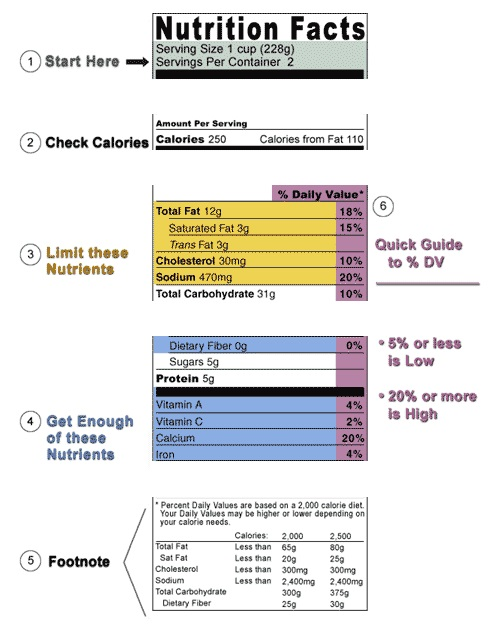

Nutrition Labels
What to look for in Labels!
Many people seem to overlook nutrition labels or only look at the calorie ammount. While other parts of the nutrition may not make you gain weight, they are not healthy for your body. Taking care of your body is very important. Take a look at the following nutrition label.  We see that as far as calories, it is a normal amount. We go to fat content and see it has 12g of fat. This is on the border-line of having too much fat as we see it is 18% of our daily recommended value. Cholesterol ammount is good. In some foods, it's too much. For example eggs have 56% of DV of cholesterol. This means that if you eat two eggs, you are over the DV. Sodium is a category many overlook. I can gurantee you do not want high blood pressure. Many foods especially fast foods have high sodium content. Be careful about the amount of sodium, many people go over the DV. Carbohydrates and calories are related. A carbohydrate has calories. That is why many who are watching their weight look at the carb amount. As far as sugars, there is no DV for it. This is because everyone's body requires a different amount. It is recommended not to go over 50g of sugar a day although most people due as that's a can of soda. As far as protein, any amount from foods is good, especially if you are working out, our muscles need it to heal.